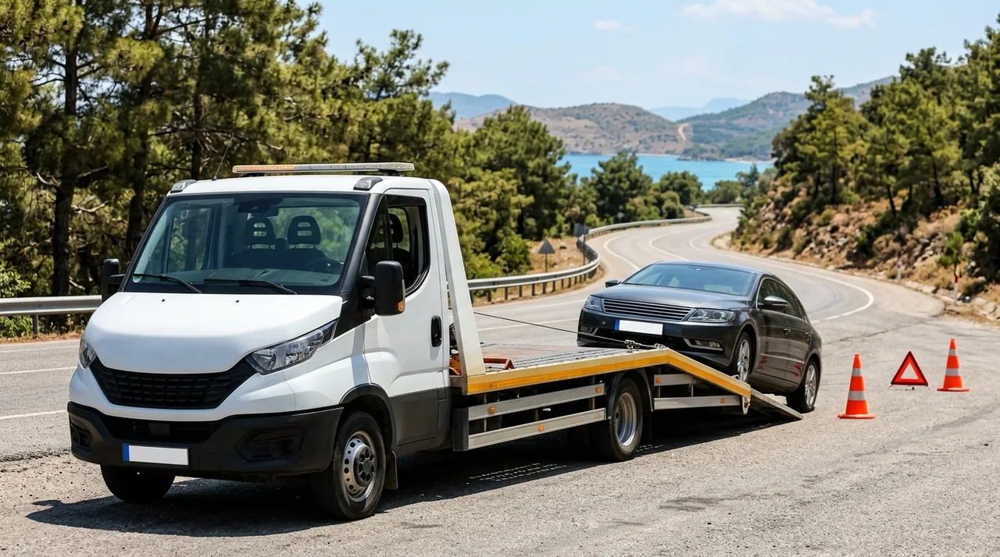

Milas 7/24 Oto Kurtarma, Oto Çekici ve Yol Yardım
Milas Merkez, Emek Mahallesi Sanayi Sitesi, Meşelik–Dörttepe–Havalimanı D330 hattı ve ilçenin 132 mahallesinde yolda kalan araçlar için kesintisiz çekici ve kurtarıcı desteği.

Milas Karayolları, Sanayi Sitesi ve Kırsal Mahallelerde Oto Kurtarma
Muğla'nın yüzölçümü ve mahalle sayısı en geniş ilçesi olan Milas (132 resmi mahalle); hem Bodrum–Havalimanı yönündeki D330 koridorunu hem de Söke–Aydın yönündeki D525 ve Yatağan–Muğla bağlantı yollarını barındırır. Güvercinlik noktamızdan Milas'ın güney mahalleleri olan Meşelik'e 7,6 km (~12 dk), Boğaziçi'ne 11,4 km (~19 dk), Dörttepe'ye 12,9 km (~20 dk), Havalimanı Ekinanbarı kavşağına 22,3 km (~26 dk) ve Milas Merkez / Emek Mahallesi Sanayi Sitesi'ne 35,5 km (~36 dk) mesafedeyiz.
Meşelik – Dörttepe – Koru – Milas Hattı
Milas-Bodrum karayolunun en hızlı akan kesimlerinde yaşanan lastik patlaması, kayış kopması, hararet ve kaza durumlarında aracınızı emniyetli şekilde yükleyip Milas Sanayi Sitesi'ne ulaştırıyoruz.
Milas Merkez 13 Mahallede Çekici
Emek, Cumhuriyet, İsmet Paşa, Aydınlıkevler, Burgaz, Hisarbaşı-Hoca Bedrettin, Hacıabti, Hacı İlyas, Şevketiye, Güneş, Gümüşlük, Firuzpaşa-Gazipaşa ve Ahmetçavuş-Hayıtlı mahallelerine 7/24 servis.
132 Köy ve Mahallede Kurtarıcı
2012 Büyükşehir Yasası sonrası mahalleye dönüşen Çamköy, Kırcağız, Çomakdağ Kızılağaç, Kafaca, Ağaçlıhüyük, Ovakışlacık ve Sakarkaya dahil tüm kırsal yollarda kurtarma desteği veriyoruz.
Şanzıman ve Tampon Korumalı Çekim
Otomatik vitesi P konumunda kilitlenen, elektronik el freni bırakmayan veya alçak şasiye sahip araçları sürüklemeden platforma alıyoruz.
 7/24 Mobil Yol Yardım
7/24 Mobil Yol Yardım
Yerinde Akü Takviyesi ve Stepne Desteği
Aracınız çekici gerektirmeden çalışabilecek durumdaysa bulunduğunuz otopark veya yol kenarında akü takviyesi ve lastik değişimi yapıyoruz.
Milas Hizmet Bölgelerimiz — 132 Mahallenin Tamamı
NVİ MAKS ve Milas Belediyesi kayıtlarıyla doğrulanmış 132 mahallenin tamamı hizmet ağımızdadır:
Sıkça Sorulan Sorular
Bölgedeki sürücülerin çekici, yol yardım, ücretlendirme ve varış süreleriyle ilgili en sık sorduğu sorular:
Milas-Bodrum yolu Meşelik, Dörttepe veya Koru mevkiinde kaldım, ne kadar sürede gelirsiniz?
Aracımız Güvercinlik'te beklediği için Meşelik'e 7,6 km (~15 dk), Dörttepe'ye 12,9 km (~22 dk), Havalimanı/Koru hattına ise 22–28 km (~28–35 dk) içinde ulaşabiliyoruz.
Milas merkezdeki aracımı Emek Mahallesi Sanayi Sitesi'ne veya Bodrum'daki yetkili servise çeker misiniz?
Evet. Aracınızı ister Milas Sanayi Sitesi'ndeki ustanıza ister Bodrum Konacık/Turgutreis veya Muğla/İzmir yetkili servislerine güvenle taşıyoruz.
Milas'ın eski köylerine (kırsal mahallelere) çekici gönderiyor musunuz?
Evet, Milas'ın 132 resmi mahallesinin tamamına asfalt veya stabilize köy yolu ayrımı olmaksızın uygun kurtarıcı yönlendiriyoruz.